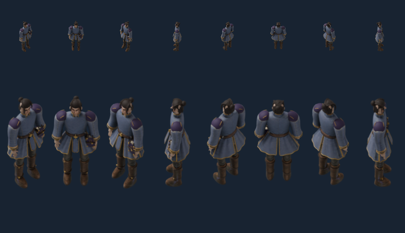
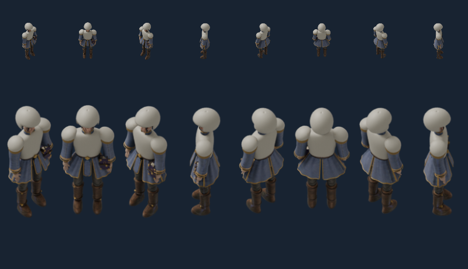
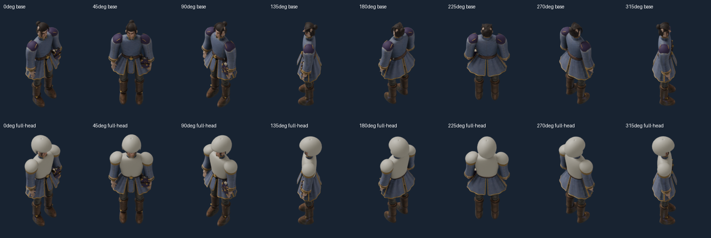

Visual gate FAIL. Animation expansion stopped: ambiguous rear head, smooth cloth and rounded placeholder gear. Source rotation checks pass; full art and eight-view gear reuse do not.
Headings left to right:0°,45°,90°,135°,180°,225°,270°,315°. Fixed camera and light; body rotated, never mirrored. Upper row50px / lower150px reference body-axis scale. Native800×460 browser captures; click to inspect exact pixels.


